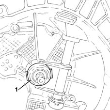

1820A30 thrust bearing - r + r with gearbox removed
- Path
- Procedures > 18 CLUTCH > 1820 CLUTCH RELEASE CONTROLS > 1820A clutch release mechanical control > 1820A30 thrust bearing - r + r with gearbox removed
- Kind
- repair procedure (removal / refitting; the operation number is the code)
- Applies to
- all engines; all production periods
- Interactive page
- https://sloeber94.github.io/elrnDB-lYpsln/en/#/2429098
Applies to: engines: 1.2 8v, 1.2 16v, 1.4 16v; all production periods
 Removing
Removing
 Refitting
Refitting1. Release and remove the thrust bearing.

Applies to: engines: 1.3 JTD; all production periods
Removing
Refitting1. Release and remove the thrust bearing.
Applies to: engines: 1.2 8v, 1.2 16v, 1.4 16v; all production periods
Refitting
RemovingPlace the thrust bearing back in its housing.
Applies to: engines: 1.3 JTD; all production periods
Refitting
RemovingPlace the thrust bearing back in its housing.